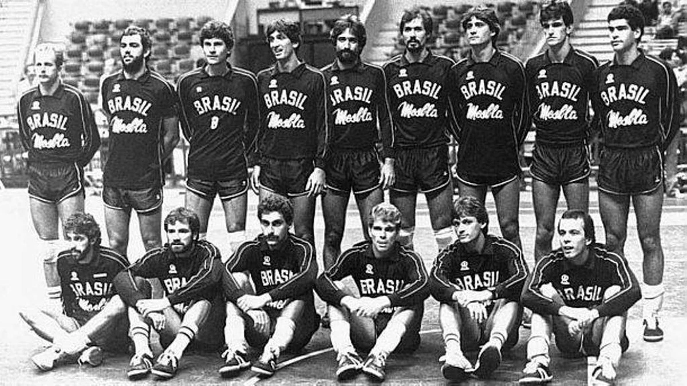
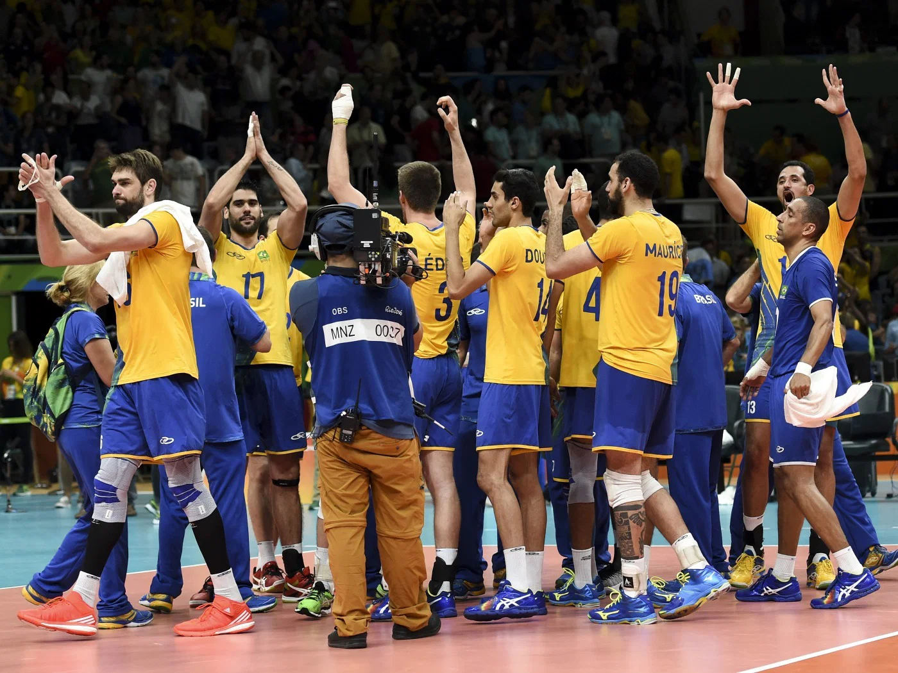
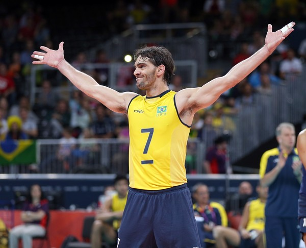

Vôlei no Brasil: de invenção americana a paixão nacional
Como um esporte criado nos Estados Unidos se tornou uma das maiores forças do país
Pedro Zanetti—
São Paulo
A Origem do Voleibol
O voleibol nasceu lá no finalzinho do século XIX, mais precisamente em 1895, nos Estados Unidos. A ideia original de William G. Morgan era criar um esporte que misturasse várias modalidades, mas que tivesse menos impacto físico que o basquete, evitando lesões. Deu certo: o jogo se espalhou rapidamente pelo planeta e, no Brasil, desembarcou no início do século XX, ganhando força total nas décadas seguintes até virar uma verdadeira paixão nacional.

Origem do voleibol nos Estados Unidos.
Como o Vôlei funciona?
Para curtir uma partida de vôlei, não precisa ser nenhum árbitro profissional. O objetivo básico é simples: mandar a bola por cima da rede para que ela caia no chão da quadra adversária, sem deixar que ela toque no seu próprio lado. Cada equipe pode dar no máximo três toques na bola antes de enviá-la de volta. As partidas são disputadas em sets (geralmente vence quem ganhar 3 sets de 5), e a pontuação é corrida a cada lance.

Partida de vôlei oficial.
O Brasil no cenário
Quando o assunto é voleibol feminino de alto nível, o Brasil é uma verdadeira potência mundial. Tudo isso ganha vida nos principais campeonatos do país, como a Superliga Brasileira de Vôlei, uma competição extremamente disputada que movimenta ginásios e torcidas de norte a sudeste do país, além dos grandes torneios internacionais como o Campeonato Mundial e a Liga das Nações.

Seleção brasileira de vôlei.
Mas o grande motor desse sucesso são os ícones em quadra. É impossível falar da força do vôlei brasileiro sem exaltar as atletas que colocaram o país no topo do mundo. Lendas eternas como Fofão (uma das maiores levantadoras de todos os tempos), Sheilla Castro (craque decisiva e bicampeã olímpica) e Fabiana Claudino (capitã exemplar e paredão no bloqueio) abriram o caminho. Hoje, essa tradição continua firme com novos talentos brilhando tanto nas quadras quanto na modalidade de praia, inspirando milhões de meninas a entrarem no esporte.
A Importância na Vida dos Atletas
Mais do que assistir, praticar vôlei faz bem para o corpo e para a mente. O esporte desenvolve a agilidade, fortalece os músculos, melhora o condicionamento físico e, por ser coletivo, ensina muito sobre trabalho em equipe e união. Valorizar e incentivar o vôlei é garantir que mais crianças tenham acesso a uma ferramenta poderosa de transformação social e saúde.